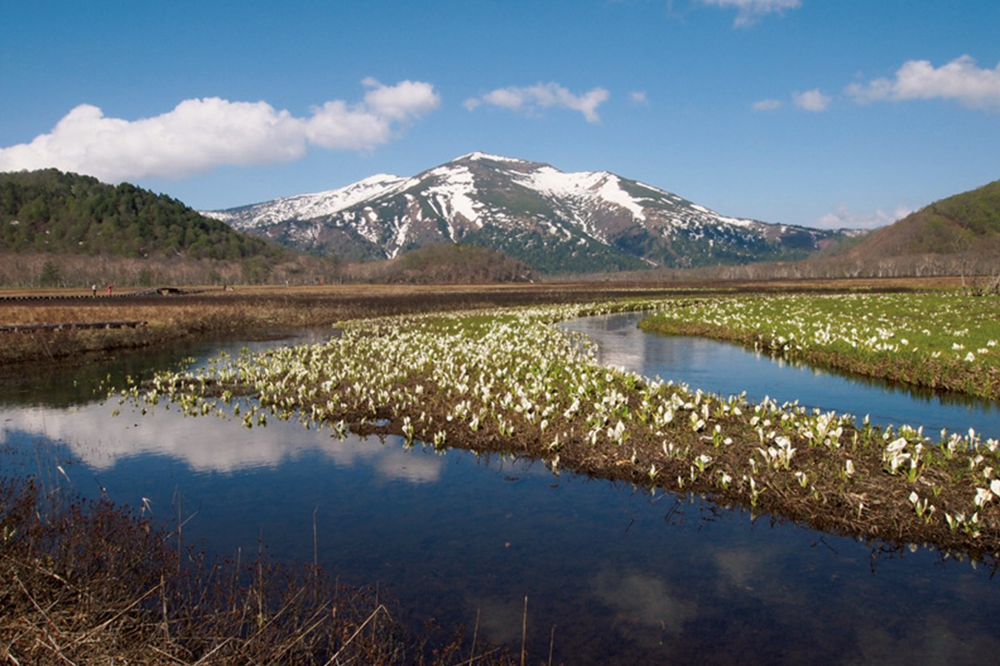
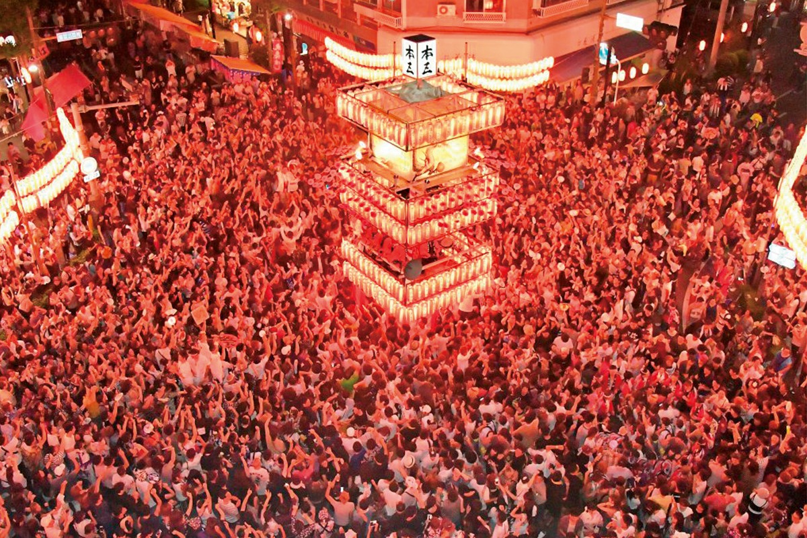
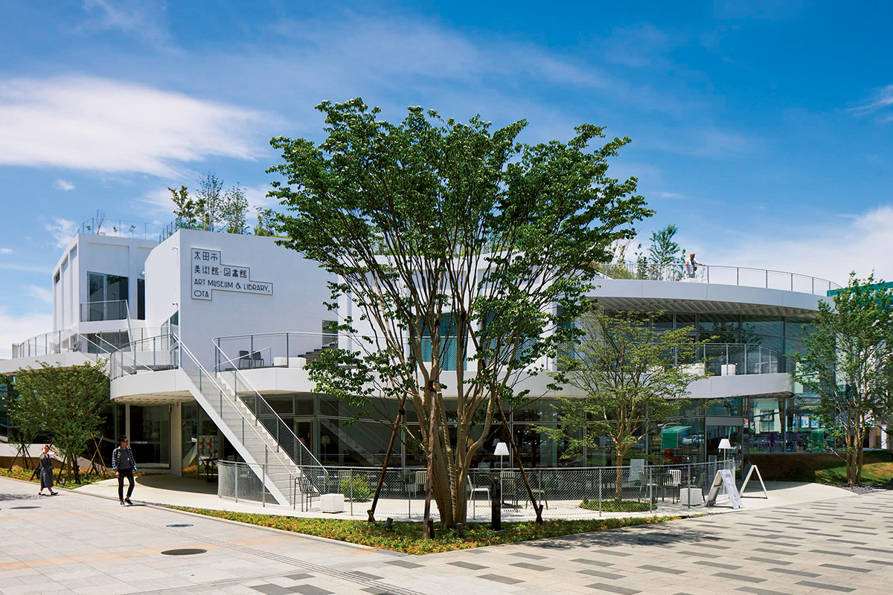
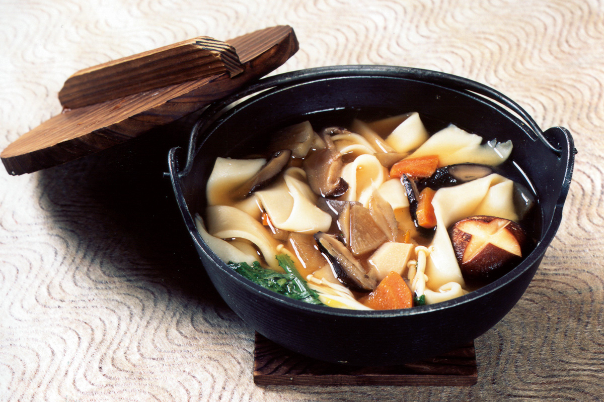
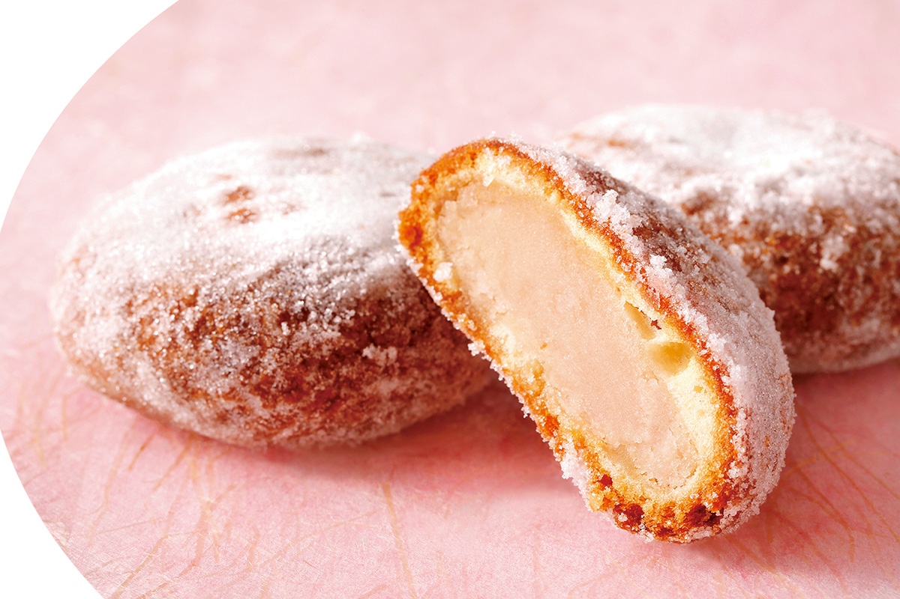
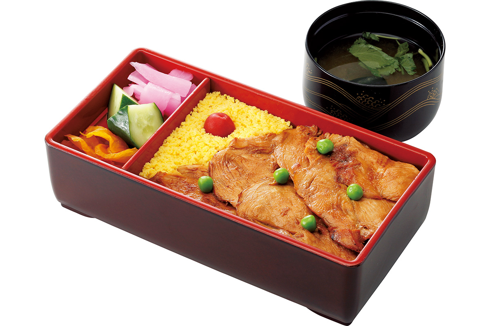
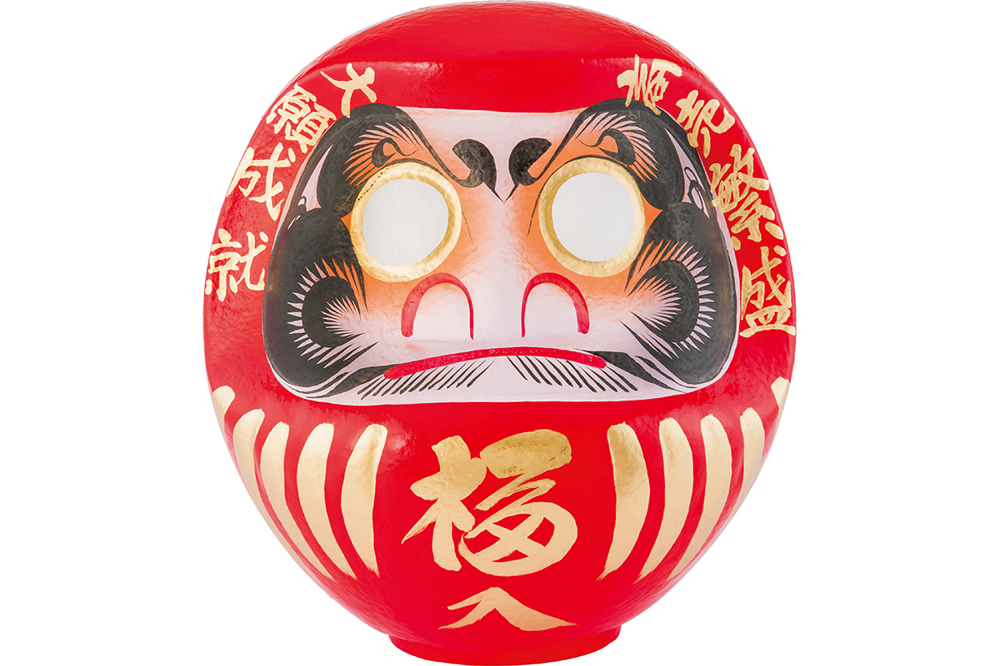
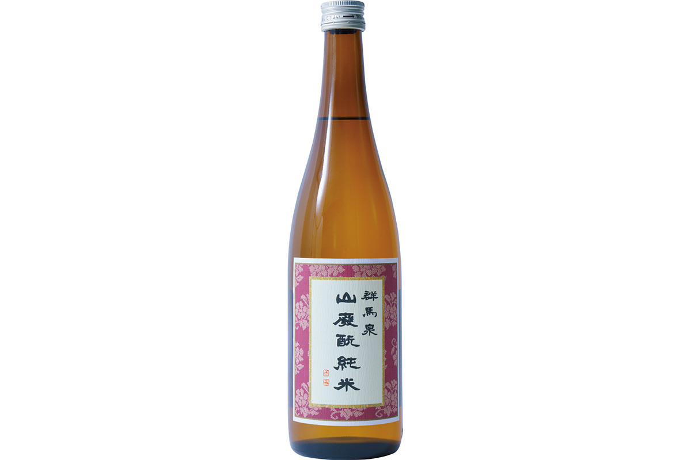

Префектура Гумма
Гумма: горные купели, водные пустоши и дарума

Весенние белые цветы стоят по берегам ручья, который течёт через болото, а на горизонте поднимается гора со снегом на склоне.
В этой префектуре нет моря, зато есть три знаменитые горы, десятки горячих источников и огромное болото, куда едут за цветением. Рассказываем, за чем ехать в Гумму.
О префектуре
Перекрёсток дорог между столицей и морем
Гумма лежит там, где сходятся древние тракты Накасэндо и Микуни-кайдо, и с давних пор через неё шли товары между столицей, Японским морем и областью Синано. Даже сегодня здесь проходят три скоростные дороги и две ветки скоростной железной дороги, поэтому префектуру считают одним из главных узлов востока страны.
С запада и севера её окружают горы. Три из них, Акаги, Харуна и Мёги, называют «тремя горами Кодзукэ». Есть здесь и гора Танигава, одна из ста самых известных вершин Японии. В горах стоят знаменитые горячие источники: Кусацу, Икао, Сима и восемнадцать источников области Минаками.
На самой границе префектуры лежит национальный парк Одзэ, где сохранились высокогорные болота, а по долине Ватарасэ до сих пор ходят поезда с открытыми вагонетками. От старой железной дороги Синъэцу остались «очковые мосты», то есть каменные виадуки с высокими арками, и музей железной дороги у перевала Усуи. В 2014 году шелкопрядильную фабрику в Томиока и памятники шёлковой промышленности внесли в список Всемирного культурного наследия.
Что посмотреть
Болото, по которому идут по деревянным настилам
Национальный парк Одзэ
Одзэгахара это одно из самых больших в стране высокогорных болот, а рядом лежит озеро Одзэ-нума. Вокруг поднимаются двухтысячники, среди них гора Хиутигатакэ, и всюду стоят густые древние леса. По болоту проложены настилы, поэтому здесь можно идти часами, не проваливаясь в воду.
- Справки
- визитный центр у горы Одзэ-яма-но хана
- Телефон
- +81 27-220-4431
Что ещё посмотреть
- Очковый мост Усуи, каменный виадук с четырьмя высокими арками
- Ущелье Агацума и водохранилище Ямба, река среди скал и новое водохранилище
- Обсерватория префектуры, гора, где стоит большой телескоп
Праздники
Танец, под который пляшет весь город
Праздник Ягибуси в Кириу
Это главное летнее событие города Кириу. За три дня здесь проходит и городской праздник Гион, и всеяпонский конкурс Ягибуси, то есть состязание исполнителей народной песни и танца, а вечером на площадь выходит общий хоровод вокруг освещённой башни.

- Период
- первая пятница августа и ещё два дня
- Место
- кварталы Хонтё, Суэхиро и Нисики в городе Кириу
Другие праздники
- Ярмарка дарума в Такасаки, зимняя ярмарка кукол-дарума
- Танабата в Маэбаси, летний праздник с бумажными украшениями
- Праздник в Нумате, шествие с повозками и музыкой
Музеи и архитектура
Музей, который построили холмом
Музей и библиотека города Ота
Здание собрано из пяти блоков, на крышах которых высадили растения, а между ними идёт спиральный спуск. Замысел был в том, чтобы дом и зелень, искусственное и природное смешались и получился холм, по которому можно гулять. Внутри работают библиотека и выставочные залы.

- Адрес
- 16-30 Higashihoncho, Ota, Gunma
- Телефон
- +81 276-55-3036
Что ещё посмотреть
- Музей современного искусства префектуры, собрание живописи XX века
- Центр Всемирного наследия «Сэкайто», экспозиция о фабрике в Томиока
- Дом-музей в старом квартале, деревянные постройки торговых улиц
Местная кухня
Широкая лапша в чугунном котле
Оккирикоми
Гумма издавна славится пшеницей, поэтому здешнее блюдо варят из широкой свежей лапши. Её опускают в густой бульон на соевом соусе или мисо вместе с овощами и томят в чугунном котле наге, пока всё не станет мягким. Зимой такую похлёбку здесь едят в каждом доме.

Яки-мандзю
Это ещё одно старинное угощение края: тесто жарят на решётке или запекают, а начинка бывает разной, от густой мисо-глазури до сладкой пасты из фасоли. Подают такие лепёшки горячими, часто прямо с палочкой.

Что ещё попробовать
- Мидзусава-удон, тонкая лапша, которую подают у источника Мидзусава
- Сукияки, говядина, которую тушат с овощами прямо за столом
Где поесть
Дом с курицей и густым соусом
«Торихэй», главный дом
Это известный дом японской кухни, где давно готовят блюда из курицы. Главное угощение здесь называют «дзёсю гойё торимэси»: тонко нарезанную мягкую курицу подают на рисе, а сверху идёт густая тёмная подлива старого рецепта, секрет которой держат в семье.

- Адрес
- 1-18-6 Rokku-machi, Maebashi, Gunma
- Телефон
- +81 27-223-5454
- Часы
- с 11:00 до 21:30, последний заказ в 21:00
- Выходные
- нет
- Сайт
- torihei.co.jp
Ремёсла
Кукла, у которой глаза пока пустые
Кукла-дарума из Такасаки
Дарума это кукла, которую покупают под загаданное желание: у неё нарисованы брови и усы, а глаза оставлены белыми. Один глаз закрашивают, когда желание загадано, второй, когда оно сбылось. На куклах из Такасаки пишут пожелания удачи, а лицо украшают изображениями журавля и черепахи, которые считаются добрыми знаками. Сухой воздух Гуммы подходит для этого ремесла, и кукол здесь делают больше двухсот лет.

- Справки
- объединение мастеров дарума префектуры Гумма
- Телефон
- +81 27-386-5770
Что привезти
Пончик из местной пшеницы и сакэ с горным вкусом
Пончики «Хондзюку доунатцу»
Кондитерская печёт пончики из пшеницы, выращенной в Гумме, а начинку делает из бобов с Хоккайдо. Это витринное лакомство дома, которое покупают и в дорогу, и к чаю.
- Телефон
- +81 274-84-2417
- Сайт
- cogetudou.co.jp
Сакэ «Гумма-идзуми»
Завод открылся в 1863 году и держится двух правил: брать воду из родников горы Акаги и варить сакэ старым способом ямахай, то есть на медленно вызревающей закваске кимото, без добавок. Отсюда и плотный, чуть пряный вкус.

- Телефон
- +81 276-31-2432
Где остановиться
Купель под открытым небом в ущелье
Онсэн Хоси-онсэн Тёдзюкан
Гостиница стоит у подножия перевала Микуни и работает больше ста сорока лет. Её большой зал «Хоси-но-ю» сохранил облик эпохи Мэйдзи, а главное здание и флигель признаны материальными культурными ценностями страны.
- Адрес
- 650 Nagai, Minakami, Tone, Gunma
- Телефон
- +81 278-66-0005
- Комнат
- 33
- Цена
- от 15 000 иен за ночь за номер с двумя приёмами пищи и обслуживанием, налоги и банный сбор отдельно
- Сайт
- hoshi-onsen.com
Местный диалект
Как здесь говорят «очень вкусно»
- наккара уммээ ёочень вкусно
- оофуу да мусищедрый человек
- массакá сакуи ёчеловек очень простой в общении
- сэванээ су ёдело простое
Рекорды
В чём Гумма первая
- №1 объём горячей воды из источников Кусацу: первое место в стране
- №1 производство конняку: первое место
- №1 производство коконов и шёлка-сырца: первое место
Вопросы и ответы
Что ещё спрашивают о Гумме
Как называют кирпичный арочный мост у перевала Усуи?
Очковый мост. Железнодорожный мост достроили в 1892 году и назвали так из-за четырёх огромных арок, которые в самом деле похожи на очки. По нему можно пройти пешком, а окрестные тоннели превратили в прогулочную тропу по бывшей линии.
Какой онсэн Гуммы воспевали ещё в древнем собрании поэзии?
Икао-онсэн. Он известен каменной лестницей в центре посёлка и «золотой водой». В префектуре сохранились каменные стелы со стихами у развилки на входе в посёлок, во дворе святилища Икао и у питьевого источника, так что их можно искать прямо во время прогулки.
Справочник
Гумма в цифрах
Общие сведения
| Административный центр | Маэбаси |
| Муниципалитеты | 12 городов, 15 посёлков, 8 деревень |
| Площадь | 6362 кв. км |
| Население | 1,95 млн человек |
| Плотность населения | 306,8 человека на кв. км |
| Туристов в год | 16,8 млн |
| Дерево префектуры | чёрная сосна куро-мацу |
| Цветок префектуры | рододендрон рэнгэ-цуцудзи |
| Птица префектуры | японский тетерев ямадори |
Климат
| Средняя температура | +16,1 |
| Максимум | +33,9 |
| Минимум | минус 0,7 |
| Осадки | 1047 мм |
| Ясных дней | 34 |
| Дождливых дней | 94 |
| Снежных дней | 16 |
Для путешественника
| Онсэнов | 96 |
| Гостиниц и рёканов | 1424 |
| Музеев искусств | 20 |
| Музеев | 77 |
| Митиноэки, придорожных станций | 32 |
| Национальное сокровище | старая шелкопрядильная фабрика в Томиока, корпус размотки и два корпуса коконов |
| Важных культурных ценностей | 60, из них 1 национальное сокровище |
| Исторических мест | 51 |
| Живописных мест | 7 |
| Природных памятников | 29 |
| Всемирное наследие | шелкопрядильная фабрика в Томиока и памятники шёлковой промышленности |
| Национальные парки | Одзэ, Никко, Дзёсинъэцу-Когэн, Мёги-Арафунэ-Саку, всего 4 |
Природные памятники
- Кедр у святилища Харуна, огромное дерево, которое считают памятником
- Большое дерево кая в Ёкомуро, старый тис у дороги
- Рододендроны на плато Юномару, заросли редких кустарников
- Камень-летун у Иваками, валун, попавший сюда с гор